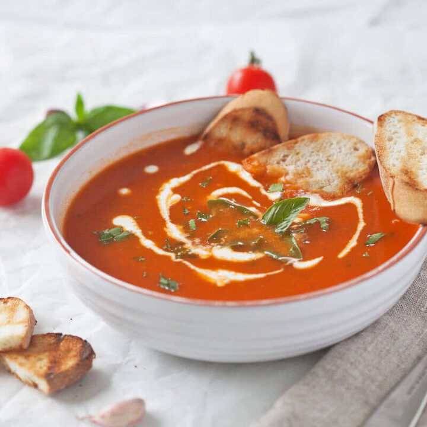

Tomato Soup

Homemade Tomato Soup from Fresh Ripe tomatoes is our favorite Summer soup recipe! Make this soup in just 15 minutes using fresh ingredients.
Ingredients
- 2 pounds (1 kg) ripe tomatoes
- 1 onion
- 3 cloves garlic
- 1 small carrot
- 3 - 4 cups vegetable stock (see notes)
- 2 bay leaves
- salt, pepper to taste
- fresh basil
- dash of balsamic vinegar
- olive oil
- 1 tbsp plant-based cream
Directions
- Wash and dry the tomatoes, then chop them roughly. Try to squeeze out excess water and seeds. Peel onion, garlic and carrot. Finely slice onion and garlic cloves and grate the carrot.
- In a soup pot, heat olive oil, then add onions and lightly fry them until translucent. Add grated carrots and garlic, stir-fry for about a minute or two, until the carrots tenderize. Then, add in chopped tomatoes and a dash of balsamic vinegar, stir well and let it cook down for a few minutes, stirring regularly.
- Add vegetable stock, bay leaves and season to taste with salt & pepper. Bring to a boil, then lower the heat and cook for about 15 minutes.
- When the tomatoes are cooked, remove the pot from heat, then remove the bay leaves and blend into a smooth soup with a stick blender.
- Roughly chop basil leaves and add to the soup for taste and garnish, add a teaspoon of cream and serve.